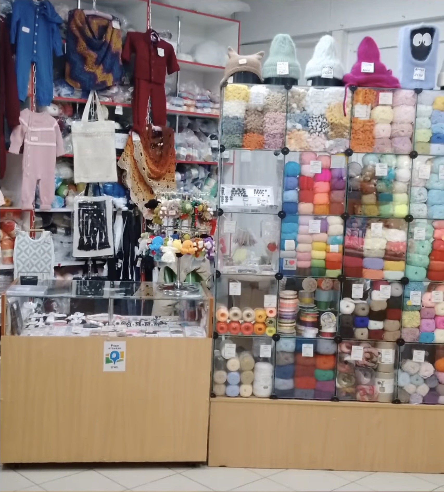
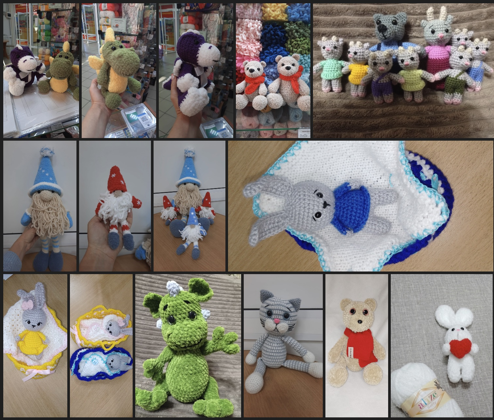

ВЯЗАЛА ДЕСЯТЬ ЛЕТ.
О СЕБЕ РАССКАЗЫВАТЬ СТЕСНЯЛАСЬ.
До обучения Надежда работала на заводе. Вязала давно, но покупателей почти не было: иногда показывала работы на личной странице, о её увлечении знали знакомые.
«Всё время казалось, что я ещё не… Недостаточно хорошо умею это делать, не очень компетентна в каких-то вопросах, не мастер и не профи».Надежда Суханова
Летом она читала материалы Евгении, в августе решилась на обучение, а в сентябре уволилась с завода. Первый заказ пришёл после публикации поста-закрепа.
ПЕРВЫЙ ЗАКАЗ.
ПОТОМ — СВОЙ МАГАЗИН.
В ноябре Надежда открыла офлайн-магазин пряжи и фурнитуры. Теперь заказы можно было получать и в интернете, и лично.
На момент интервью в магазине работали два продавца, а изделия вязала команда примерно из 30 человек. Рукодельницы также могли продавать через магазин свои работы.

ПОСТЫ, ПЕРЕПИСКА
И ОФЛАЙН.
В группе Надежда публиковала посты три-четыре раза в неделю. Заказы приходили через личные сообщения и анкету — по её оценке, примерно поровну. Для магазина она использовала и офлайн-рекламу.
Появились мастер-классы по вязанию для взрослых и детей. Ассортимент изделий вырос: от игрушек до кардиганов и пледов.

«Я ПЕРЕСТАЛА
СТЕСНЯТЬСЯ СОЦСЕТЕЙ».
На вопрос о доходе за последний год Надежда ответила: «В среднем по фарватеру миллион. Это за год)». В интервью не уточняется, идёт ли речь о выручке или чистой прибыли.
«Заметила, что я перестала бояться людей и стесняться соцсетей. Говорю о себе спокойно и даже с гордостью».Надежда Суханова
По её словам, отдых стал качественнее, а времени с детьми — больше. Деньги она вкладывала в развитие дела и хотела масштабироваться.
Прочитать исходное интервью полностью +
Как простая девушка из Нижнего Тагила может превратить свое хобби в бизнес?
Есть три компонента:
Желание
Трудолюбие
Маркетинг
Однажды к нам пришла учиться Надежда Суханова. Она работала на заводе от гудка до гудка. Но потом перевоплотилась в бизнес-вумен. Как это возможно?
Мы взяли у нее короткое интервью:
— Расскажи, что у тебя было с клиентами до курса? Как пыталась их находить?
— Клиентов до курса у Евгении было один в полгода.
О себе особо не рассказывала. Иногда на личной странице выставляла свои работы. Ну и знакомые знали, что я вяжу. Стеснялась я о себе говорить и том, что умею.
— А сколько лет ты вязала вот так без продаж? И что послужило толчком к тому, что пора уже продавать?
— Лет 10, наверное.
Все время казалось, что я еще не... Недостаточно хорошо умею это делать, не очень компетентна в каких-то вопросах, не мастер и не профи.
Толчком к тому, что пора что-то менять, послужила ссылка на Суровых. В какой-то группе девочка поделилась, что есть такой человек - Евгения Брун которая всему обучает. И я залипла. На постах, на отзывах, даже на образе жизни. Читала, изучала. Скоро решилась на обучение, потому что нравилась подача, не только материала, но и легкости.
А еще до слез ходила на работу. Найм для меня был каторгой. Завод, смена от гудка до гудка. И каждый день слезы с утра, что надо рано вставать и идти в ненавистное место.
Я ж по образованию вообще медик. А тут завод...
— Понимаю) Как ты проходила уроки? Знаю, что не прошла курс до конца, но было ли что-то сложно, не понятно? Если было, то что?
— Уроки проходила легко и быстро.
Курс брала без куратора, но мотивации было хоть отбавляй. Тем более, разжевано всё до мельчайших подробностей. Даже бабуля поймет)
— Супер) После какого урока у тебя первый заказ пришел и вообще как шло прибавление?
Когда появилась необходимость привлечения помощников? Как это происходило?
— Первый заказ пришел после написания поста-закрепа. Ну а потом понеслось)
Все лето я следила за Евгенией. В августе решилась пойти учиться, а в сентябре уволилась с работы! В ноябре открыла свой магазин с пряжей и фурнитурой
Офлайн. Теперь заказы берем не только онлайн, но и вживую.
У меня два замечательных продавца и штат вязальщиц (примерно 30 человек). Заказов хватает. Вяжем всё - от игрушек до кардиганов и пледов.
А еще я дала возможность рукодельницам реализовывать свои изделия. Мы продаем их через магазин. Они же и выполняют заказы.
К тому же я провожу мастер-классы по вязанию. Это востребовано. Люди хотят учиться, даже дети.
Вот так - от идеи до воплощения за несколько месяцев я превратилась в бизнес-вумен.
— Круть какая, аж дух захватывает, у тебя нереальная бизнес хватка!
Какие сейчас действия делаешь для привлечения клиентов? Как часто пишешь посты?
— Посты больше в группе пишу. На личной теперь больше личного)
Клиентов привлекаю другой рекламой - больше офлайн. Но и в ВК она обязательно пригодится)
— А часто пишешь? Как заказы сейчас приходят? По анкете?
— В группе раза 3-4 в неделю.
Заказы приходят чаще через личные сообщения. Но и по анкете люди переходят. Примерно 50/50.
— Класс! Ну и остался последний вопрос - можешь поделиться, какой у тебя получился доход за последний год?
— В среднем по фарватеру миллион. Это за год)
—Можешь поделиться, как изменилась жизнь, когда увеличился доход? Может что-то купила себе? Съездила в путешествие? Что-то смогла сделать, чего раньше не могла позволить себе)
— Я теперь вся в бизнесе - живу им. Он отнимает всё мое время.
Кстати, отдых стал качественнее, с детьми чаще время проводить стала - выбираемся куда-нибудь всей семьей.
Заметила, что я перестала бояться людей и стесняться соцсетей. Говорю о себе спокойно и даже с гордостью. Раньше снять видео было подобно пытке, теперь делаю это свободно.
Работаю не ради денег (хотя они дают хороший стимул), а ради пользы людям, ради счастливых улыбок и благодарности.
— Ну а ничего новенького не купила? Может копишь на что-то? Финансовую подушку обеспечиваешь? Или в ателье вкладываешь? Новое оборудование?
— Все средства идут на развитие дела) Хочу масштабироваться, сделать большой проект, о котором будут знать все!) Конечно, деньги копятся, я ж хочу безбедную старость))